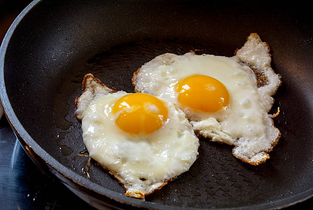

Home
Over Easy Eggs

Description
Simple over easy eggs
Ingredients
- Eggs
- Cooking Oil
- Salt and Pepper
Instructions
- In a pan, heat cooking oil on medium-high heat until the oil starts to shimmer
- Crack the eggs into the pan
- Once the whites become slightly firm and the yolk starts to set, or about 2 minutes, flip the eggs
- Cook for another 30 to 60 seconds; season with salt and pepper to taste